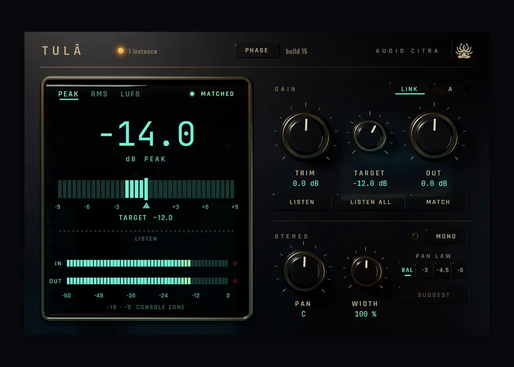

Every track, in balance.
Tulā means scale, as in the kind that balances. It's the little thing I put on every track first: it listens, sets your gain to a target, matches levels so your A/B is honest, handles pan and width, and lines up the phase between tracks.

Studio skin · straight from the plug-in
Small box, does the boring stuff right.
Listen
Pick Peak, RMS or LUFS and a Target, hit Listen and play the loudest part. It waits for audio, listens for six seconds and sets Trim for you. LUFS is proper BS.1770, gated and K-weighted, and Peak ignores that one stray click.
Peak · RMS · LUFS · 6 sListen All
Start it from any track and every Tulā in the session listens at once and sets its own gain. One pass and your whole session is staged.. that one still makes me happy.
Every linked instanceLink, Match and A/B
With Link on, Out moves opposite to Trim so the track never gets louder on you. Match sets Out so what comes out is as loud as what went in, and A/B flips to the dry signal at that same level. Louder always sounds better, so I took that off the table.
Link · Match · A/BPan and width
Pan with four laws: Balance (the default, so inserting it changes nothing), -3, -4.5 and -6 dB. Width goes 0 to 200 % without touching the mono sum, and Mono lets you check the fold-down, with a lamp that shows how much you lose.
4 pan laws · width · mono checkPhase
Give tracks that should line up the same group and hit Align. They listen to 8 seconds of playback, then it finds each track's delay and polarity and delays the early ones to meet the latest. Fix L/R does the same between the two sides of one track, and it's a button on purpose, because on a spaced stereo pair that time difference is the image. Cohere turns the bands below 960 Hz toward the rest of the group, with a meter showing what's left.
Align · Fix L/R · CohereFive skins
Studio, Paper, Rack, Console and Citra, all from the lotus menu. They are not recolours: each one has its own shape, layout, type and meter, from a big digital readout to a 2U rack with twin VUs to a lotus that lights petal by petal. Resize it however you like.
5 skins · 5 shapes · resizableGrab it and turn it around.
Every skin is built as a real little unit. Drag to spin it, scroll to get close.
I'd rather show you than tell you.
I rendered every one of these offline through the plug-in itself at 48 kHz. The settings are under each plot, so you can check my work.
Pick a finish.
These are straight from the plug-in, no mockups. Click around.. I spent way too long on some of these.
Want to try Tulā?
Early access (beta): it works and I support it, but I'm still finishing it. Every update is free, including 1.0 and all the 1.x updates after it.
VST3 · Windows 64-bit · licence, trial and signed updates right inside the plug-in · How to install · What's changed